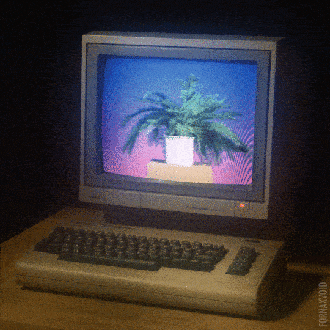

INSPIRACION DE LA PAGINA WEB
La pagina web se baso en los trabajos de el Ingeniero Eithel Agustin Paez Villafuerte ya que me parecio interesante el hecho de que pese a dedicarse a la ingenieria tiene una gran pasion por los medios audiovisuales como es la fotografia. Lo anterior nos demuestra que pese a ser de una rama en especifica no significa que uno se tenga que dedicar en su totalidad a ellos, ya que uno no dictamina que pasiones va a adquirir con el tiempo uno
Ademas de permitirme mostrar su pasatiempo como fotografo me oriento en el desarrollo web a lo que ellos en el area de la ingenieria denominan como el front end, esta orientacion de la programacion nos permite transmitir con facilidad mensajes e ideas ya que esta orientado mas a lo visual con el usuario, demostrando que todo tipo de carreras llega a necesitar de las Tecnologias de la Informacion para uno u otro motivo.
En conclusion este fue un proyecto muy interesante ya que me mostro que no solo se basa en HTML el desarrollo web si no que tambien se utilizan las hojas de estilo CSS para crear paginas web llamativas y comodas para el usuario ademas de, demostrar que el crear algo de esta magnitud no solo se basa en un equipo creativo si no que muchas mas personas estan relacionadas para crear paginas webs importantes.
